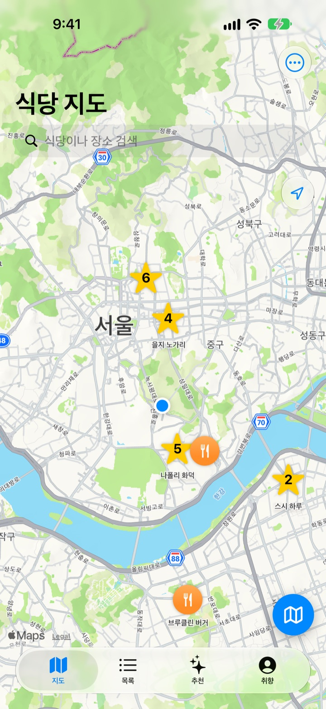
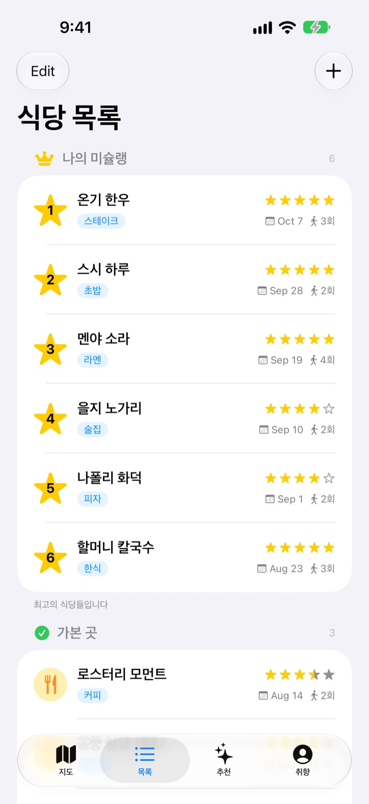
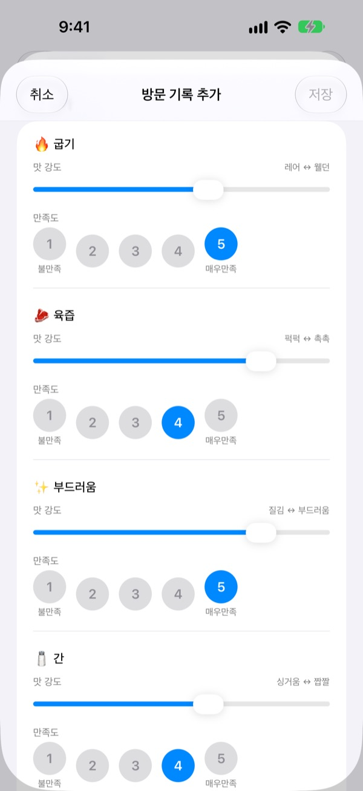
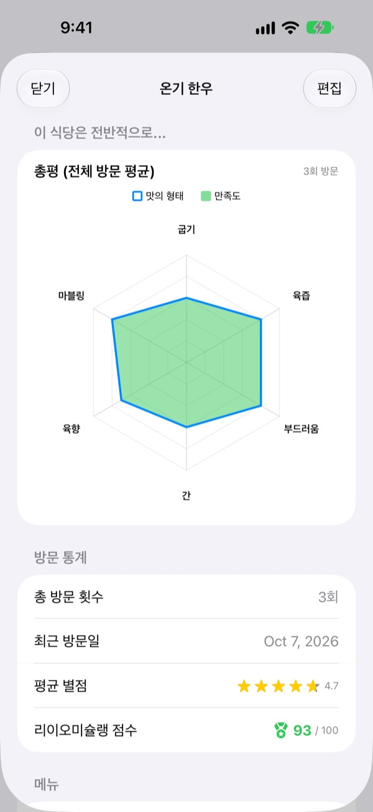

다녀온 맛집,
이제 잊지 마세요
가 본 식당과 가 보고 싶은 식당을 지도에 모으고, 갈 때마다 먹은 메뉴와 사진, 맛 평가를 남깁니다. 다음에 어디 갈지 고민될 때 내 기록이 답해 줍니다.
모든 기능이 무료입니다. 회원가입 없이 기록은 내 iPhone에만 남습니다.

한 그릇 평가해 보기
음식 종류를 고르고 맛의 세기와 만족도를 매겨 보세요. 앱의 방문 기록과 같은 항목, 같은 계산입니다.
그 집, 뭐가 맛있었더라?
분명 좋았던 식당인데 이름이 가물가물하고, 무엇을 시켰는지, 국물이 짰는지는 더 기억나지 않습니다. 결국 또 검색해서 남의 후기를 읽게 되죠. 인생 맛집은 내가 먹어 본 기록을 지도 위에 남겨, 다음 선택을 내 경험으로 하게 해 줍니다.
가본 곳, 가볼 곳, 그리고 나의 미슐랭
지도에서 검색하거나 주변 장소를 눌러 바로 저장합니다. 다녀온 곳과 언젠가 가 볼 곳을 나눠 두고, 가장 아끼는 여섯 곳은 1위부터 6위까지 순위를 매겨 따로 모읍니다.
누가 맛집을 물으면 이 목록을 보여 주면 됩니다.

음식에 맞는 질문으로 평가합니다
맵기나 간 같은 맛의 세기는 슬라이더로, 그 맛이 얼마나 마음에 들었는지는 1부터 5까지 따로 매깁니다. 스테이크는 굽기와 육즙, 초밥은 샤리와 네타, 라멘은 국물과 면발처럼 음식마다 항목이 달라집니다.
방문 기록에는 메뉴, 사진, 별점, 메모도 함께 남습니다.

다시 갈 곳이 숫자로 보입니다
방문이 쌓이면 식당 화면에 모든 방문의 평균으로 그린 총평이 나오고, 별점과 만족도를 합친 리이오미슐랭 점수가 100점 만점으로 매겨집니다.
저장한 식당에 머물다 나오면 잠시 뒤 기록하라는 알림이 와서 잊을 틈이 없습니다.

시작은 세 단계면 됩니다
- 1
식당을 저장합니다
지도에서 검색하거나 주변 장소를 눌러 목록에 넣습니다.
- 2
다녀오면 기록합니다
메뉴, 사진, 별점, 맛 평가를 남깁니다. 맛 평가는 선택입니다.
- 3
다음 갈 곳을 고릅니다
탑6와 점수를 보고 Apple 지도, 카카오맵, 네이버 지도로 길을 찾습니다.
음식마다 다른 평가 항목
- 🍽️ 일반
- 맵기, 진한맛, 단맛, 짠맛, 기름진, 본연의맛
- 🥩 스테이크
- 굽기, 육즙, 부드러움, 간, 육향, 마블링
- 🍣 초밥
- 샤리(밥), 네타(재료), 와사비, 밸런스, 쥐기, 온도
- 🍜 라멘
- 국물, 면발, 차슈, 토핑, 온도, 밸런스
- 🍕 피자
- 도우, 소스, 치즈, 굽기, 토핑, 밸런스
- 🍷 와인
- 바디, 타닌, 산도, 아로마, 피니시, 밸런스
- ☕ 커피
- 산미, 바디, 향미, 후미, 단맛, 밸런스
그 밖의 음식은 첫 줄의 일반 항목으로 평가합니다. 음식 분류는 직접 만들 수도 있습니다.
자주 묻는 질문
식당은 어떻게 추가하나요?
지도 위쪽 검색창에 식당 이름을 입력하고, 결과에서 “내 식당 목록에 추가”를 누르세요. 지도에 보이는 주변 장소를 눌러 바로 추가할 수도 있습니다. 검색에 나오지 않는 곳은 현재 위치나 지도에서 고른 자리에 직접 추가하면 됩니다.
가본 곳, 가볼 곳, 탑6는 무엇인가요?
가본 곳: 이미 다녀온 식당입니다. 방문 기록을 남길 수 있습니다. 가볼 곳: 언젠가 가 보고 싶은 식당입니다. 다녀온 뒤 식당 상세 화면에서 가본 곳으로 바꿔 주세요. 탑6(나의 미슐랭): 가장 아끼는 식당 여섯 곳에 1위부터 6위까지 순위를 매깁니다. 가볼 곳은 탑6로 지정할 수 없습니다.
맛 평가는 꼭 해야 하나요?
아니요, 선택 사항입니다. 평가해 두면 식당 화면의 총평 차트에 맛의 형태와 만족도가 쌓이고, 리이오미슐랭 점수에도 반영됩니다.
“오늘 방문은 어떠셨나요?” 알림은 언제 오나요?
저장해 둔 식당 근처에 5분 넘게 머물다 떠나면 약 40분 뒤에 알림이 옵니다. 이 기능에는 위치 “항상 허용”과 알림 허용이 필요합니다. 알림을 받고 싶지 않으면 설정 > 앱 > 인생 맛집에서 알림을 끄거나 위치를 “앱을 사용하는 동안”으로 바꿔 주세요. 위치 확인은 기기 안에서만 이뤄지며, 이동 경로를 저장하거나 외부로 보내지 않습니다.
위치 권한을 허용하지 않으면 쓸 수 없나요?
쓸 수 있습니다. 지도에서 직접 위치를 골라 식당을 추가하고 기록할 수 있습니다. 현재 위치 표시와 방문 후 알림만 쓸 수 없습니다.
장소 검색 결과가 나오지 않아요
장소 검색에는 인터넷 연결이 필요합니다. 다른 이름이나 짧은 키워드로 다시 검색해 보세요. 그래도 없으면 지도에서 자리를 골라 직접 추가할 수 있습니다.
기록은 어디에 저장되나요? 다른 기기와 동기화되나요?
식당, 방문 기록, 사진은 모두 이 iPhone에만 저장됩니다. 현재 버전은 다른 기기와의 동기화를 지원하지 않으며, 설정의 iCloud 백업·복구도 아직 동작하지 않습니다. iPhone 전체 백업(iCloud 백업 또는 컴퓨터 백업)에는 앱 데이터가 함께 포함됩니다.
기록을 모두 지우고 싶어요
지도 화면의 설정에서 “모든 데이터 삭제”를 누르면 식당과 방문 기록이 지워집니다. 되돌릴 수 없으니 주의해 주세요. 사진까지 남김없이 지우려면 앱을 삭제하면 됩니다.
앱을 지웠다 다시 깔면 기록이 남아 있나요?
아니요. 기록이 기기에만 저장되기 때문에 앱을 삭제하면 함께 지워집니다. 앱을 삭제하기 전에 꼭 확인해 주세요.
정말 모두 무료인가요?
네, 모든 기능이 무료입니다. 광고도 회원가입도 없습니다. 설정의 개발자 응원하기는 원할 때만 하는 선택이고, 해도 기능은 같습니다.
위에 답이 없는 문제는 앱의 설정 > 지원에서 바로 보내 주시거나 mizzking75@gmail.com으로 메일을 보내 주세요. 앱 버전, iPhone 모델, 어떤 화면에서 무엇을 했는지 적어 주시면 더 빨리 확인할 수 있습니다.